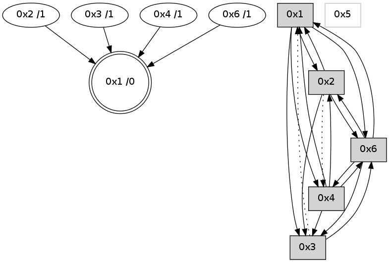

>> << IDX [start] -100 -25 -5 +0 +5 +25 +100 [655.14560008]
 Previous packets
----------------------------------------------------------------------
650.224516 beacon01(adaf) #0 coord=01,02,05,03,04,06 cycle=432.0ms assoc
-- color-indic=0 64 0d c8
650.234476 beacon02(adaf) #0 coord=01,02,05,03,04,06 cycle=432.0ms assoc 64 5c 37
650.244477 beacon05(adaf) #0 coord=01,02,05,03,04,06 cycle=432.0ms assoc 64 fa 1d
650.254478 beacon03(adaf) #0 coord=01,02,05,03,04,06 cycle=432.0ms assoc 64 66 39
650.264479 beacon04(adaf) #0 coord=01,02,05,03,04,06 cycle=432.0ms assoc 64 c0 13
650.274478 beacon06(adaf) #0 coord=01,02,05,03,04,06 cycle=432.0ms assoc 64 b4 0f
650.286207 [Hello(2): seq=945 sym=6,1,3 asym=4 sysInfo= stat=6:2,0,1,0/1:11,0,3,0/3:4,0,1,0/4:0,0,1,0]
----------------------------------------------------------------------
650.716624 beacon01(adaf) #0 coord=01,02,05,03,04,06 cycle=432.0ms assoc
-- color-indic=0 64 41 78
650.726584 beacon02(adaf) #0 coord=01,02,05,03,04,06 cycle=432.0ms assoc 64 10 87
650.736585 beacon05(adaf) #0 coord=01,02,05,03,04,06 cycle=432.0ms assoc 64 b6 ad
650.746584 beacon03(adaf) #0 coord=01,02,05,03,04,06 cycle=432.0ms assoc 64 2a 89
650.756585 beacon04(adaf) #0 coord=01,02,05,03,04,06 cycle=432.0ms assoc 64 8c a3
650.766587 beacon06(adaf) #0 coord=01,02,05,03,04,06 cycle=432.0ms assoc 64 f8 bf
650.778302 [Hello(4): seq=452 sym=6,1,2 asym=3 sysInfo= stat=6:6,0,2,0/1:1,0,3,0/2:1,0,2,0/3:1,0,1,0]
650.783304 [Hello(1): seq=351 sym=2,4,3,6 sysInfo= stat=2:11,0,3,0/4:1,0,1,0/3:1,0,1,0/6:0,0,3,0]
----------------------------------------------------------------------
651.208734 beacon01(adaf) #0 coord=01,02,05,03,04,06 cycle=432.0ms assoc
-- color-indic=0 64 85 17
651.218695 beacon02(adaf) #0 coord=01,02,05,03,04,06 cycle=432.0ms assoc 64 d4 e8
651.228696 beacon05(adaf) #0 coord=01,02,05,03,04,06 cycle=432.0ms assoc 64 72 c2
651.238695 beacon03(adaf) #0 coord=01,02,05,03,04,06 cycle=432.0ms assoc 64 ee e6
651.248695 beacon04(adaf) #0 coord=01,02,05,03,04,06 cycle=432.0ms assoc 64 48 cc
651.258696 beacon06(adaf) #0 coord=01,02,05,03,04,06 cycle=432.0ms assoc 64 3c d0
651.270421 [Hello(2): seq=946 sym=6,1,3 asym=4 sysInfo= stat=6:2,0,1,0/1:12,0,3,0/3:5,0,1,0/4:0,0,1,0]
651.279256 [STC(1) #0.5 to-color d=0]
----------------------------------------------------------------------
651.700841 beacon01(adaf) #0 coord=01,02,05,03,04,06 cycle=432.0ms assoc
-- color-indic=0 64 db 76
651.710802 beacon02(adaf) #0 coord=01,02,05,03,04,06 cycle=432.0ms assoc 64 8a 89
651.720803 beacon05(adaf) #0 coord=01,02,05,03,04,06 cycle=432.0ms assoc 64 2c a3
651.730803 beacon03(adaf) #0 coord=01,02,05,03,04,06 cycle=432.0ms assoc 64 b0 87
651.740803 beacon04(adaf) #0 coord=01,02,05,03,04,06 cycle=432.0ms assoc 64 16 ad
651.750803 beacon06(adaf) #0 coord=01,02,05,03,04,06 cycle=432.0ms assoc 64 62 b1
651.762358 [STC(2)->1 #0.5 to-color d=1]
651.766406 [Hello(4): seq=453 sym=6,1,2 asym=3 sysInfo= stat=6:7,0,2,0/1:2,0,4,0/2:1,0,2,0/3:1,0,1,0]
651.770146 [STC(3)->1 #0.5 to-color d=1]
651.773912 [STC(4)->1 #0.5 to-color d=1]
651.779634 [Hello(1): seq=352 sym=2,4,3,6 sysInfo= stat=2:11,0,3,0/4:1,0,1,0/3:1,0,1,0/6:0,0,3,0]
----------------------------------------------------------------------
652.192949 beacon01(adaf) #0 coord=01,02,05,03,04,06 cycle=432.0ms assoc
-- color-indic=0 64 1f 19
652.202909 beacon02(adaf) #0 coord=01,02,05,03,04,06 cycle=432.0ms assoc 64 4e e6
652.212910 beacon05(adaf) #0 coord=01,02,05,03,04,06 cycle=432.0ms assoc 64 e8 cc
652.222910 beacon03(adaf) #0 coord=01,02,05,03,04,06 cycle=432.0ms assoc 64 74 e8
652.232910 beacon04(adaf) #0 coord=01,02,05,03,04,06 cycle=432.0ms assoc 64 d2 c2
652.242911 beacon06(adaf) #0 coord=01,02,05,03,04,06 cycle=432.0ms assoc 64 a6 de
652.254627 [Hello(2): seq=947 sym=6,1,3 asym=4 sysInfo= stat=6:2,0,1,0/1:13,0,4,0/3:6,0,2,0/4:0,0,2,0]
----------------------------------------------------------------------
652.685057 beacon01(adaf) #0 coord=01,02,05,03,04,06 cycle=432.0ms assoc
-- color-indic=0 64 53 a9
652.695018 beacon02(adaf) #0 coord=01,02,05,03,04,06 cycle=432.0ms assoc 64 02 56
652.705019 beacon05(adaf) #0 coord=01,02,05,03,04,06 cycle=432.0ms assoc 64 a4 7c
652.725017 beacon04(adaf) #0 coord=01,02,05,03,04,06 cycle=432.0ms assoc 64 9e 72
652.735019 beacon06(adaf) #0 coord=01,02,05,03,04,06 cycle=432.0ms assoc 64 ea 6e
652.746746 [Hello(4): seq=454 sym=6,1,2 asym=3 sysInfo= stat=6:8,0,2,0/1:3,0,4,0/2:1,0,2,0/3:1,0,1,0]
----------------------------------------------------------------------
653.177164 beacon01(adaf) #0 coord=01,02,05,03,04,06 cycle=432.0ms assoc
-- color-indic=0 64 97 c6
653.187125 beacon02(adaf) #0 coord=01,02,05,03,04,06 cycle=432.0ms assoc 64 c6 39
653.197125 beacon05(adaf) #0 coord=01,02,05,03,04,06 cycle=432.0ms assoc 64 60 13
653.207125 beacon03(adaf) #0 coord=01,02,05,03,04,06 cycle=432.0ms assoc 64 fc 37
653.217126 beacon04(adaf) #0 coord=01,02,05,03,04,06 cycle=432.0ms assoc 64 5a 1d
653.227126 beacon06(adaf) #0 coord=01,02,05,03,04,06 cycle=432.0ms assoc 64 2e 01
----------------------------------------------------------------------
653.669274 beacon01(adaf) #0 coord=01,02,05,03,04,06 cycle=432.0ms assoc
-- color-indic=0 64 da c1
653.679235 beacon02(adaf) #0 coord=01,02,05,03,04,06 cycle=432.0ms assoc 64 8b 3e
653.689236 beacon05(adaf) #0 coord=01,02,05,03,04,06 cycle=432.0ms assoc 64 2d 14
653.699235 beacon03(adaf) #0 coord=01,02,05,03,04,06 cycle=432.0ms assoc 64 b1 30
653.709236 beacon04(adaf) #0 coord=01,02,05,03,04,06 cycle=432.0ms assoc 64 17 1a
653.719236 beacon06(adaf) #0 coord=01,02,05,03,04,06 cycle=432.0ms assoc 64 63 06
653.730912 [Hello(4): seq=455 sym=6,1,2 sysInfo= stat=6:8,0,2,0/1:3,0,4,0/2:1,0,2,0]
653.736531 [Hello(1): seq=354 sym=2,4,3,6 sysInfo= stat=2:12,0,3,0/4:1,0,1,0/3:1,0,1,0/6:0,0,3,0]
653.739030 [STC(1) #0.6 to-color d=0]
----------------------------------------------------------------------
654.161382 beacon01(adaf) #0 coord=01,02,05,03,04,06 cycle=432.0ms assoc
-- color-indic=0 64 1e ae
654.171342 beacon02(adaf) #0 coord=01,02,05,03,04,06 cycle=432.0ms assoc 64 4f 51
654.181343 beacon05(adaf) #0 coord=01,02,05,03,04,06 cycle=432.0ms assoc 64 e9 7b
654.191344 beacon03(adaf) #0 coord=01,02,05,03,04,06 cycle=432.0ms assoc 64 75 5f
654.201343 beacon04(adaf) #0 coord=01,02,05,03,04,06 cycle=432.0ms assoc 64 d3 75
654.211345 beacon06(adaf) #0 coord=01,02,05,03,04,06 cycle=432.0ms assoc 64 a7 69
654.222901 [STC(4)->1 #0.6 to-color d=1]
----------------------------------------------------------------------
654.653489 beacon01(adaf) #0 coord=01,02,05,03,04,06 cycle=432.0ms assoc
-- color-indic=0 64 52 1e
654.663453 beacon02(adaf) #0 coord=01,02,05,03,04,06 cycle=432.0ms assoc 64 03 e1
654.673451 beacon05(adaf) #0 coord=01,02,05,03,04,06 cycle=432.0ms assoc 64 a5 cb
654.683451 beacon03(adaf) #0 coord=01,02,05,03,04,06 cycle=432.0ms assoc 64 39 ef
654.693451 beacon04(adaf) #0 coord=01,02,05,03,04,06 cycle=432.0ms assoc 64 9f c5
654.703451 beacon06(adaf) #0 coord=01,02,05,03,04,06 cycle=432.0ms assoc 64 eb d9
654.715143 [Hello(4): seq=456 sym=6,3,1,2 sysInfo= stat=6:8,0,2,0/3:0,0,1,0/1:4,0,5,0/2:1,0,2,0]
654.720614 [Hello(1): seq=355 sym=2,4,3,6 sysInfo= stat=2:12,0,4,0/4:1,0,2,0/3:1,0,1,0/6:0,0,3,0]